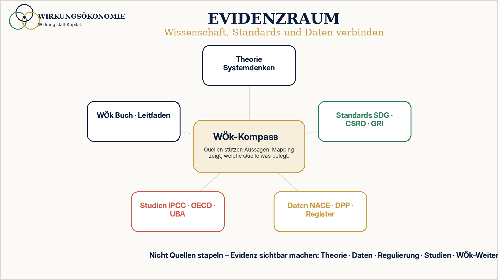

Theorie
Systemtheorie, Kybernetik, Ökonomie, Innovation, Management und Wohlstandstheorie.
 Wirkungsökonomie
Wirkungsökonomie
Evidenz · Quellenregister
Die Nachweisebene hinter dem Evidenz-Hub: konkrete Werke, Standards, Studien, Datenquellen und interne WÖk-Dokumente, strukturiert nach ihrer Funktion für die Wirkungsökonomie.
Einordnung
Die Wirkungsökonomie ist kein freier Meinungskatalog und kein moralischer Appell. Sie baut auf Denktraditionen, wissenschaftlichen Grundlagen, offiziellen Standards, globalen Zielsystemen, regulatorischen Datenräumen und eigenen methodischen Weiterentwicklungen auf.
Dieser Quellenraum zeigt, worauf die WÖk aufsetzt: welche theoretischen Grundlagen sie nutzt, welche externen Standards und Regularien anschlussfähig sind, welche Studien und Daten ihre Problemdiagnose stützen, welche Vergleichsmodelle relevant sind und wo die eigene Weiterentwicklung der Wirkungsökonomie beginnt.

Leselogik
Einige Quellen liefern Theorie. Andere liefern Daten, Rechtsrahmen, Vergleichsmodelle, Inspiration oder Abgrenzung. Deshalb ordnet die Wirkungsökonomie Quellen nicht nur alphabetisch, sondern nach ihrer Rolle im System.
Systemtheorie, Kybernetik, Ökonomie, Innovation, Management und Wohlstandstheorie.
SDG-Daten, Eurostat, Destatis, UBA, Produktdaten, Berichte und offene Datenbanken.
EU-Rechtsakte, CSRD, ESRS, EU-Taxonomie, DSA, AI Act, DPP und weitere Regularien.
ESG, Gemeinwohlökonomie, Donut, Wellbeing Economy, Beyond GDP und Postwachstum.
Begriffsleitfaden, Buch, Glossar, technische Leitlinien und freigegebene Modellstände.
Grafiken, Diagramme und Bilder werden mit Quellen- oder Konzeptbasis dokumentiert.
Quellenbereiche
Konkrete Werke von Maturana/Varela, von Foerster, Beer, Bateson, Vester, Meadows, Schumpeter, Drucker, Kondratieff, Smith, Ostrom, Sen, Nussbaum, Daly und Georgescu-Roegen.
Rückkopplung, Nichtlinearität, nicht-triviale Systeme, Selbstorganisation, Beobachtung, Systemhebel und Wirkungsordnungen.
Markt, Eigentum, Wettbewerb, Kapital und Gewinn bleiben, werden aber an Wirkung zurückgebunden.
Die SDGs bilden den globalen Referenzrahmen. SDG+ ergänzt Demokratie, Medienqualität, Rechtsstaatlichkeit und digitale Selbstbestimmung.
CSRD, ESRS, GRI, ISSB, EU-Taxonomie, DPP, CSDDD, CBAM, GHG Protocol, TNFD, CDP, SBTi, Eurostat und NACE.
Kuratierte Studienräume für Klima, Biodiversität, Demokratie, Medien, Wohnen, Rente, Arbeit, Automatisierung, Unternehmen und Kapitalmarkt.
Gemeinwohlökonomie, Donut, Wellbeing Economy, Degrowth, Beyond GDP, Circular Economy, Social Economy und Impact Investing.
Wiederverwendbare Bibliografie für Website, Buch, Akademie, Whitepaper, Kompass und Scanner.
Dokumentiert, worauf Visuals, Diagramme, Tabellen und generierte Bilder beruhen.
Quellenkarte
Jede Quelle wird als Karte mit Funktion, Qualität, WÖk-Bezug und Grenzen dargestellt. Dadurch wird klar, was eine Quelle tatsächlich stützt und was nicht.
book · Qualität B
Kurzbeschreibung: Grundlagenwerk der Kybernetik und Beobachtung zweiter Ordnung.
WÖk-Bezug: Nicht-triviale Systeme lassen sich nicht wie Maschinen steuern. Das stützt die WÖk-Kritik an technokratischer Einzelfallsteuerung und die Bedeutung von Rückkopplung.
Stützt: Theorie, Systemlogik, Wirkungsarchitektur.
Grenze: Theoretische Grundlage, kein empirischer Wirkungsnachweis und keine WÖk-Bewertung.
Weitere Quellenkarten ansehenQualität
A = offizielle Primärquelle / amtliche Daten / internationales Regelwerk. B = wissenschaftliche oder standardsetzende Quelle. C = Praxis-, Markt- oder Beratungsquelle. D = ergänzende Fachquelle / Thinktank / Debattenbeitrag. E = nur ergänzend / niedrige Priorität.
Öffentlich wird diese Klassifikation lesbar kontextualisiert. Intern bleibt sie vollständig erhalten, damit der WÖk-Kompass später externe Quelle, WÖk-Interpretation und WÖk-Bewertung klar unterscheiden kann.